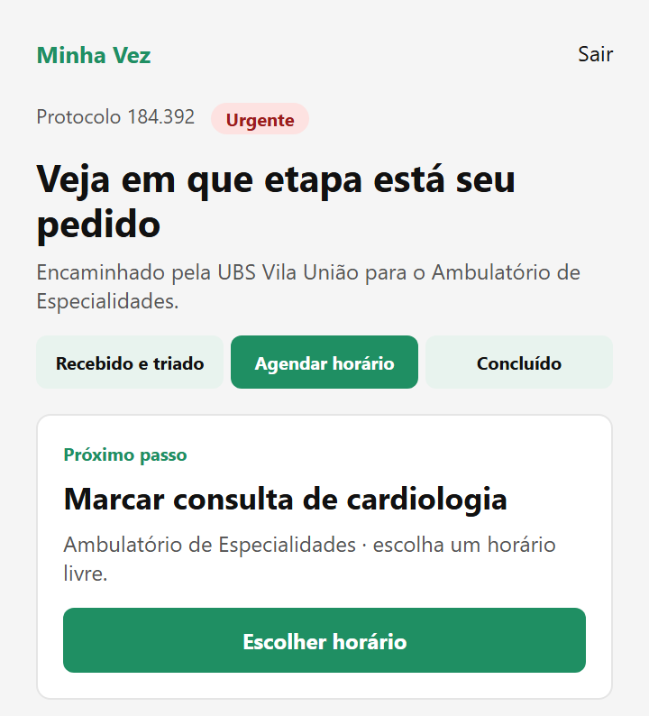

Minha Vez · Enterprise Challenge · IA e ciência de dados
10 slides, que são o PDF da entrega e as 10 cenas do vídeo, com tudo visível. Clique na tela do médico (slide 07) para ver os enquadramentos da câmera. Mostrar regiões da câmera · esconder
Minha Vez
IA e ciência de dados no encaminhamento da UBS
Enterprise Challenge · FAZESP

Silverio PereiraRM 566968
Cristo MendesRM 567403

Thethê AndradeRM 568305

JunqueiraRM 566906
Martins AraújoRM 575032
O encaminhamento some no caminho
daqui em diante, ninguém rastreia
Cidadão
não sabe em que pé está o pedido
Gestor
não enxerga a fila
Falta um fluxo com dados padronizados
Uma auditoria do TCU apontou a falta de alimentação padronizada de dados no sistema do Ministério da Saúde como gargalo de visibilidade.
Fonte: auditoria do Tribunal de Contas da União (TCU).
A espera custa saúde
dos brasileiros da classe C acham que a espera no SUS coloca vidas em risco
cerca de 1 em cada 3 já desistiu de uma consulta demorada
Quem mais perde é quem tem menos tempo e mobilidade: idosos e trabalhadores informais.
Fonte: pesquisa do Instituto Locomotiva.
O Minha Vez acompanha o pedido

Sistema de gestão pública que acompanha o encaminhamento da UBS até a consulta especializada.
App e totem
US01Identificação por Cartão SUS, CPF ou Gov.brUS02Acompanhamento da etapaUS03Agendamento, reagendamento e cancelamento
Painel de chamada
US04Chamada sem nome nem dado clínico
Painel web
US05Fila por especialidade, ações pendentes, espera média e faltas
RNF01Dado clínico e nome completo só no canal institucional, nunca nas telas públicas.
Onde a IA e os dados entram
- 1
Consulta na UBS
Dezenas de pacientes em poucas horas: detalhes importantes podem passar despercebidos.
Hipótese do grupo, a confirmar com profissionais da UBS. - 2
Encaminhamento
Incompleto ou sem justificativa clara, ele volta, atrasa ou fica com a prioridade errada.
- 3
Fila do Minha Vez
O paciente espera mais, e a fila fica mais longa.
- 4
Painel do gestor
Mostra a fila de hoje, mas não antecipa a de amanhã.
6 etapas e 1 decisão humana
Assistente de documentação clínica. Não é chatbot: quem usa é o médico, no canal institucional.
- 1
Consentimento
O paciente autoriza a gravação da consulta.
- 2
Transcrição
A conversa vira texto. O áudio é apagado.
reconhecimento de fala - 3
Relatório
Sintomas, hábitos, medicamentos e pontos de atenção, cada um ligado à fala.
modelo de linguagem, extração estruturada - 4
Rascunho
Especialidade sugerida, sinais de urgência e justificativa.
“gerado por IA, revisar” - 5
Médico confirma
Edita, apaga ou recusa. Se recusar, registra como sempre.
- 6
Encaminhamento
Nasce e segue a fila do Minha Vez.
RECEBIDO_TRIADO
A IA atua só até o rascunho. O encaminhamento existe a partir da confirmação do médico.
Como a IA entra no Minha Vez
Transcriçãoo áudio é apagado depois
O que o senhor tem sentido?
Quando subo escada, sinto um aperto no peito.1
Fumo meio maço por dia.2
Tomo losartana de manhã.3
Meu pai teve infarto com 50 anos.4
Relatóriogerado por IA, revisar
Rascunho do encaminhamentogerado por IA, revisar
→ Encaminhamento.especialidade→ Encaminhamento.urgente = falseAperto no peito aos esforços, tabagista, pai com infarto aos 50 anos. Solicito avaliação cardiológica.
→ campo novo, só no canal institucionalresponsável: médico da UBS · 06/11/2026 14:32
Por que aquiÉ onde o erro custa mais caro: um encaminhamento mal feito gera semanas de espera inútil.
Usa o domínio que já existeEspecialidade, selo de urgência e HistoricoStatus. Nenhum sistema paralelo.
Só no canal institucionalRelatórios e histórico nunca chegam ao app, ao totem ou ao painel (RNF01).
O painel que antecipa a fila
Encaminhamentos estruturados→anonimizados→análise e previsão→painel do gestor (US05)
Encaminhamentos por semana, por especialidade
12 semanas observadas e 4 previstas
Faltas por dia e turno
% dos horários agendados
Sexta à tarde e segunda de manhã concentram as faltas.
Dados sintéticos, criados para ilustrar o painel. Premissa: 4 especialidades; Cardiologia cresce cerca de 3% por semana e as outras ficam estáveis; faltas maiores na sexta à tarde e na segunda de manhã.
Ganhos reais, riscos tratados
Benefícios
Maior ganho: o encaminhamento certo já na primeira vez.
- MédicoOlha para o paciente em vez de digitar; recebe os detalhes organizados e o histórico em mãos.
- CidadãoEncaminhamento completo, prioridade justa e menos idas e voltas.
- Equipe da UBSMenos encaminhamentos devolvidos e menos retrabalho na triagem.
- GestorDados padronizados desde a origem; tendências de demanda e de faltas.
- TodosO primeiro e o último paciente do turno recebem o mesmo cuidado no registro.
Desafios e como o projeto trata
Maior risco: o médico confiar na IA sem ler.
- Privacidade: dado de saúde é sensível na LGPDConsentimento antes de gravar, áudio apagado após a transcrição e relatório só no canal institucional.
- Erro de transcrição ou sintoma inventadoCada item aponta para o trecho da fala que o gerou; o médico corrige antes de salvar.
- Ruído, sotaques e termos regionaisPiloto em uma UBS para medir a qualidade antes de ampliar.
- Infraestrutura das UBSLevantar internet, microfone e computador; se a IA falhar, a consulta segue normal.
- Integração com o prontuárioIntegrar com o que a UBS já usa em vez de duplicar.
- Adesão e custo de operaçãoComeçar pela primeira consulta, onde o ganho é maior, e medir o tempo economizado.
- Confiança excessivaRelatório marcado como rascunho; nada vira encaminhamento sem confirmação explícita.
A IA não diagnostica, não receita e não encaminha.
- 1
Tudo o que a IA produz entra como rascunho: “gerado por IA, revisar”.
- 2
Nenhum encaminhamento é criado sem a confirmação do médico.
- 3
O médico edita ou apaga qualquer item e pode recusar tudo.
- 4
O
HistoricoStatusregistra quem confirmou e quando. - 5
Se a IA falhar, a consulta segue igual.
A IA organiza a informação.
Quem decide é o médico.
github.com/FIAP-Dream-Team/HackGov
Vídeo: [colar o link do YouTube]